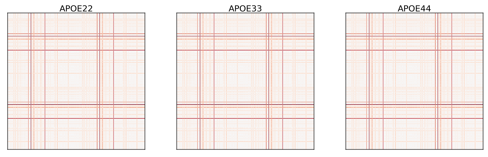
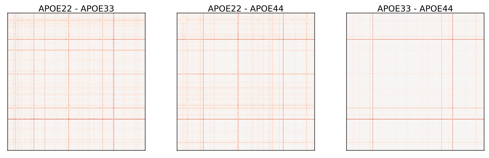

import graspologic as gp
import matplotlib as mpl
import matplotlib.pyplot as plt
import numpy as np
import pandas as pd
import seaborn as sns
from joblib import Parallel, delayed
from scipy.spatial.distance import pdist, squareform
from statsmodels.stats.multitest import multipletests
import hyppo
from hyppo.ksample import MANOVA, KSample
from pkg.data import (
GENOTYPES,
HEMISPHERES,
SUB_STRUCTURES,
SUPER_STRUCTURES,
load_fa_corr,
load_vertex_df,
load_vertex_metadata,
load_volume,
load_volume_corr,
)
vertex_df = load_vertex_df()
vols, labels = load_volume()
# normalize volumes
vols /= vols.sum(axis=1, keepdims=True)
unique_labels = np.unique(labels)
# make distance matrices
vol_dists = np.array([squareform(pdist(v.reshape(-1, 1))) for v in vols])
means = [vol_dists[labels == label].mean(axis=0) for label in np.unique(labels)]
## plot the mean differences per genotype
fig, ax = plt.subplots(
ncols=3,
figsize=(10, 3),
constrained_layout=True,
dpi=300,
gridspec_kw=dict(width_ratios=[1, 1, 1]),
)
for idx, label in enumerate(np.unique(labels)):
data = vol_dists[labels == label].mean(axis=0)
gp.plot.adjplot(
means[idx],
ax=ax[idx],
# meta=vertex_name,
# group=["Hemisphere_abbrev"],
)
ax[idx].set_title(f"{label}", pad=0, size=12)

## plot the absolute difference in means
fig, ax = plt.subplots(
ncols=3,
figsize=(10, 3),
constrained_layout=True,
dpi=300,
gridspec_kw=dict(width_ratios=[1, 1, 1]),
)
for idx, (label1, label2) in enumerate([(0, 1), (0, 2), (1, 2)]):
data = np.abs(means[label1] - means[label2])
gp.plot.adjplot(
data,
ax=ax[idx],
# meta=vertex_name,
# group=["Hemisphere_abbrev"],
)
ax[idx].set_title(f"{unique_labels[label1]} - {unique_labels[label2]}", pad=0, size=12)

Edge-wise analysis#
rdx, cdx = np.triu_indices_from(vol_dists[0], k=1)
n = rdx.size
apoe2 = vol_dists[labels == "APOE22"]
apoe3 = vol_dists[labels == "APOE33"]
apoe4 = vol_dists[labels == "APOE44"]
def worker(x, y, z, reps=100000, auto=False):
stat, pval = KSample("Dcorr").test(x, y, z, auto=auto, reps=reps)
return stat, pval
res = Parallel(-1, verbose=1)(
delayed(worker)(apoe2[:, i, j], apoe3[:, i, j], apoe4[:, i, j]) for i, j in zip(rdx, cdx)
)
[Parallel(n_jobs=-1)]: Using backend LokyBackend with 48 concurrent workers.
[Parallel(n_jobs=-1)]: Done 104 tasks | elapsed: 3.2min
[Parallel(n_jobs=-1)]: Done 354 tasks | elapsed: 8.5min
[Parallel(n_jobs=-1)]: Done 704 tasks | elapsed: 15.9min
[Parallel(n_jobs=-1)]: Done 1154 tasks | elapsed: 26.0min
[Parallel(n_jobs=-1)]: Done 1704 tasks | elapsed: 37.9min
[Parallel(n_jobs=-1)]: Done 2354 tasks | elapsed: 51.9min
[Parallel(n_jobs=-1)]: Done 3104 tasks | elapsed: 68.4min
[Parallel(n_jobs=-1)]: Done 3954 tasks | elapsed: 86.9min
[Parallel(n_jobs=-1)]: Done 4904 tasks | elapsed: 107.5min
[Parallel(n_jobs=-1)]: Done 5954 tasks | elapsed: 130.4min
[Parallel(n_jobs=-1)]: Done 7104 tasks | elapsed: 155.4min
[Parallel(n_jobs=-1)]: Done 8354 tasks | elapsed: 182.6min
edge_df = pd.DataFrame(res, columns=["stat", "pvalue"])
edge_df["rdx"] = rdx
edge_df["cdx"] = cdx
for idx, row in edge_df.iterrows():
loc1 = row["rdx"]
region1 = vertex_df.loc[loc1, ["Hemisphere", "Structure"]]
loc2 = row["cdx"]
region2 = vertex_df.loc[loc2, ["Hemisphere", "Structure"]]
edge_df.loc[idx, "region1"] = "-".join(region1.values)
edge_df.loc[idx, "region2"] = "-".join(region2.values)
significant, corrected_pvalue, _, _ = multipletests(edge_df.pvalue, method="fdr_bh")
edge_df["corrected_pvalue"] = corrected_pvalue
edge_df["significant"] = significant
edge_df.sort_values(["pvalue", "stat"], ascending=[True, False]).head(30)
| stat | pvalue | rdx | cdx | region1 | region2 | corrected_pvalue | significant | |
|---|---|---|---|---|---|---|---|---|
| 33434 | 0.501310 | 0.00001 | 124 | 141 | L-Lateral_Olfactory_Tract | L-Medial_Lemniscus | 0.052762 | False |
| 33418 | 0.452451 | 0.00001 | 124 | 125 | L-Lateral_Olfactory_Tract | L-Ventral_Hippocampal_Commissure | 0.052762 | False |
| 50236 | 0.429288 | 0.00002 | 234 | 278 | R-Periaquaductal_Grey | R-Pontine_Reticular_Nucleus | 0.052762 | False |
| 33564 | 0.387769 | 0.00002 | 124 | 271 | L-Lateral_Olfactory_Tract | R-Trigeminal_Sensory_Nucleus | 0.052762 | False |
| 15816 | 0.372999 | 0.00002 | 51 | 262 | L-Dorsal_Tenia_Tecta | R-Parabrachial_Nucleus | 0.052762 | False |
| 18975 | 0.373225 | 0.00003 | 63 | 139 | L-Striatum | L-Medial_Longitudinal_Fasciculus_and_Tectospin... | 0.052762 | False |
| 18976 | 0.411637 | 0.00004 | 63 | 140 | L-Striatum | L-Spinocerebellar_Tract | 0.052762 | False |
| 19142 | 0.402309 | 0.00004 | 63 | 306 | L-Striatum | R-Spinocerebellar_Tract | 0.052762 | False |
| 33600 | 0.400340 | 0.00004 | 124 | 307 | L-Lateral_Olfactory_Tract | R-Medial_Lemniscus | 0.052762 | False |
| 33711 | 0.391122 | 0.00004 | 125 | 212 | L-Ventral_Hippocampal_Commissure | R-Claustrum | 0.052762 | False |
| 33563 | 0.387264 | 0.00005 | 124 | 270 | L-Lateral_Olfactory_Tract | R-Raphe_Nucleus | 0.052762 | False |
| 4907 | 0.370190 | 0.00005 | 15 | 63 | L-Insular_Cortex | L-Striatum | 0.052762 | False |
| 33455 | 0.362664 | 0.00005 | 124 | 162 | L-Lateral_Olfactory_Tract | L-PosteriorDorsal_ParaventricularMedialParvice... | 0.052762 | False |
| 15679 | 0.396218 | 0.00006 | 51 | 125 | L-Dorsal_Tenia_Tecta | L-Ventral_Hippocampal_Commissure | 0.052762 | False |
| 15845 | 0.388886 | 0.00006 | 51 | 291 | L-Dorsal_Tenia_Tecta | R-Ventral_Hippocampal_Commissure | 0.052762 | False |
| 33529 | 0.380222 | 0.00006 | 124 | 236 | L-Lateral_Olfactory_Tract | R-Ventral_Tegmental_Area | 0.052762 | False |
| 825 | 0.379873 | 0.00006 | 2 | 167 | L-Cingulate_Cortex_Area_24b | R-Cingulate_Cortex_Area_24a_prime | 0.052762 | False |
| 15805 | 0.355921 | 0.00006 | 51 | 251 | L-Dorsal_Tenia_Tecta | R-Rostral_Linear_Nucleus | 0.052762 | False |
| 19148 | 0.408775 | 0.00007 | 63 | 312 | L-Striatum | R-Cerebellar_White_Matter | 0.052762 | False |
| 33550 | 0.372483 | 0.00007 | 124 | 257 | L-Lateral_Olfactory_Tract | R-Dentate_(Lateral)_Nucleus_of_Cerebellum | 0.052762 | False |
| 19082 | 0.375183 | 0.00008 | 63 | 246 | L-Striatum | R-Superior_Colliculus | 0.052762 | False |
| 19043 | 0.363280 | 0.00008 | 63 | 207 | L-Striatum | R-Caudomedial_Entorhinal_Cortex | 0.052762 | False |
| 731 | 0.361371 | 0.00008 | 2 | 73 | L-Cingulate_Cortex_Area_24b | L-Latero_Dorsal_Nucleus_of_Thalamus | 0.052762 | False |
| 15820 | 0.355682 | 0.00008 | 51 | 266 | L-Dorsal_Tenia_Tecta | R-Pedunculotegmental_Medial_Paralemniscial_and... | 0.052762 | False |
| 33584 | 0.396358 | 0.00009 | 124 | 291 | L-Lateral_Olfactory_Tract | R-Ventral_Hippocampal_Commissure | 0.052762 | False |
| 14269 | 0.359633 | 0.00009 | 46 | 125 | L-Claustrum | L-Ventral_Hippocampal_Commissure | 0.052762 | False |
| 41538 | 0.350164 | 0.00009 | 167 | 290 | R-Cingulate_Cortex_Area_24a_prime | R-Lateral_Olfactory_Tract | 0.052762 | False |
| 15056 | 0.344177 | 0.00009 | 49 | 63 | L-Ventral_Claustrum | L-Striatum | 0.052762 | False |
| 19067 | 0.382129 | 0.00010 | 63 | 231 | L-Striatum | R-Accumbens | 0.052762 | False |
| 20808 | 0.350429 | 0.00010 | 70 | 124 | L-Ventral_Tegmental_Area | L-Lateral_Olfactory_Tract | 0.052762 | False |
edge_df.to_csv("../outs/edge_df.csv", index=False)
vertex-wise analysis#
omni = gp.embed.OmnibusEmbed().fit_transform(vol_dists)
apoe2 = omni[labels == "APOE22"]
apoe3 = omni[labels == "APOE33"]
apoe4 = omni[labels == "APOE44"]
res = Parallel(-1, verbose=1)(
delayed(worker)(apoe2[:, i, :], apoe3[:, i, :], apoe4[:, i, :]) for i in range(apoe2.shape[1])
)
region_df = pd.DataFrame(res, columns=["stat", "pvalue"])
region_df["idx"] = np.arange(apoe2.shape[1])
for idx, row in region_df.iterrows():
loc = row["idx"]
region = vertex_df.loc[loc, ["Hemisphere", "Structure"]]
region_df.loc[idx, "region"] = "-".join(region.values)
significant, corrected_pvalue, _, _ = multipletests(region_df.pvalue, method="fdr_bh")
region_df["corrected_pvalue"] = corrected_pvalue
region_df["significant"] = significant
region_df.sort_values("pvalue").head(15)
significant.sum()
region_df.to_csv("../outs/region_df.csv", index=False)
region_df.sort_values(["pvalue", "stat"], ascending=[True, False]).head(30)
| stat | pvalue | idx | region | corrected_pvalue | significant | |
|---|---|---|---|---|---|---|
| 63 | 0.324864 | 0.000340 | 63 | L-Striatum | 0.112879 | False |
| 2 | 0.199619 | 0.005300 | 2 | L-Cingulate_Cortex_Area_24b | 0.872045 | False |
| 256 | 0.184873 | 0.007880 | 256 | R-Cerebellar_Cortex | 0.872045 | False |
| 18 | 0.149728 | 0.016970 | 18 | L-Primary_Motor_Cortex | 0.992711 | False |
| 168 | 0.142411 | 0.020510 | 168 | R-Cingulate_Cortex_Area_24b | 0.992711 | False |
| 246 | 0.141086 | 0.022460 | 246 | R-Superior_Colliculus | 0.992711 | False |
| 28 | 0.129219 | 0.027100 | 28 | L-Primary_Somatosensory_Cortex_Jaw_Region | 0.992711 | False |
| 0 | 0.129916 | 0.027530 | 0 | L-Cingulate_Cortex_Area_24a | 0.992711 | False |
| 218 | 0.111095 | 0.038990 | 218 | R-Ectorhinal_Cortex | 0.992711 | False |
| 112 | 0.111399 | 0.039700 | 112 | L-Pontine_Reticular_NucleusCaudal | 0.992711 | False |
| 166 | 0.095858 | 0.055449 | 166 | R-Cingulate_Cortex_Area_24a | 0.992711 | False |
| 8 | 0.094886 | 0.056429 | 8 | L-Cingulate_Cortex_Area_32 | 0.992711 | False |
| 124 | 0.093332 | 0.056709 | 124 | L-Lateral_Olfactory_Tract | 0.992711 | False |
| 13 | 0.093180 | 0.058859 | 13 | L-Frontal_Cortex_Area_3 | 0.992711 | False |
| 229 | 0.093202 | 0.061039 | 229 | R-Striatum | 0.992711 | False |
| 139 | 0.076788 | 0.083239 | 139 | L-Medial_Longitudinal_Fasciculus_and_Tectospin... | 0.992711 | False |
| 278 | 0.073112 | 0.090049 | 278 | R-Pontine_Reticular_Nucleus | 0.992711 | False |
| 174 | 0.068501 | 0.098089 | 174 | R-Cingulate_Cortex_Area_32 | 0.992711 | False |
| 197 | 0.070398 | 0.098409 | 197 | R-Primary_Somatosensory_Cortex_Upper_Lip_Region | 0.992711 | False |
| 305 | 0.065567 | 0.105329 | 305 | R-Medial_Longitudinal_Fasciculus_and_Tectospin... | 0.992711 | False |
| 151 | 0.067323 | 0.106039 | 151 | L-Ventricular_System_4thVentricle | 0.992711 | False |
| 312 | 0.065515 | 0.106919 | 312 | R-Cerebellar_White_Matter | 0.992711 | False |
| 209 | 0.060739 | 0.116819 | 209 | R-Dorsolateral_Entorhinal_Cortex | 0.992711 | False |
| 16 | 0.058550 | 0.123999 | 16 | L-Lateral_Orbital_Cortex | 0.992711 | False |
| 193 | 0.058473 | 0.124099 | 193 | R-Primary_Somatosensory_Cortex_Hindlimb_Region | 0.992711 | False |
| 19 | 0.056782 | 0.126799 | 19 | L-Secondary_Motor_Cortex | 0.992711 | False |
| 24 | 0.057276 | 0.127409 | 24 | L-Primary_Somatosensory_Cortex_Barrel_Field | 0.992711 | False |
| 35 | 0.054732 | 0.135629 | 35 | L-Primary_Visual_Cortex_Binocular_Area | 0.992711 | False |
| 77 | 0.048501 | 0.155338 | 77 | L-Reticular_Nucleus_of_Thalamus | 0.992711 | False |
| 207 | 0.046177 | 0.158898 | 207 | R-Caudomedial_Entorhinal_Cortex | 0.992711 | False |